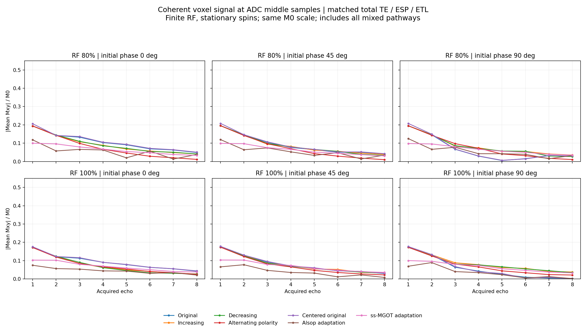
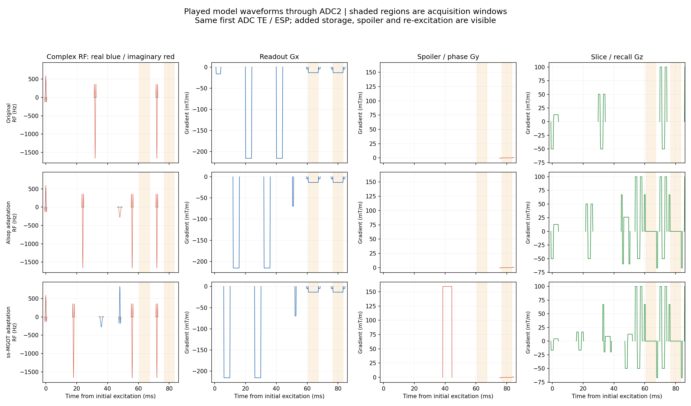

6 October audit: The pre-RF figures include the leading imaging crusher, which rotates My into Mx. They are not direct Gibbons Point C reproductions. Preparation-endpoint figures and a causal crusher control are now available in the Gibbons replication audit linked from the repository README.
Two research adaptations implement the Alsop and ss-MGOT preparation mechanisms, with common fixed-180° imaging RF. These water-only models use a spatial sinc tip-up rather than the paper’s spectral-spatial pulse. They do not reproduce its full scanner protocol. All methods have first ADC midpoint TE 64 ms, ESP 16 ms and eight echoes. Original means the v1.6 source with these comparison overrides; centered original separates the RF-centering correction used in the prepared models.


Gy spoiling removes the coherent transverse mean, rather than the local transverse vector. The mean-over-y view includes this effect. Mz includes stored signal, equilibrium, inversion and recovery; it is not a stimulated-echo fraction. No molecular diffusion attenuation or image reconstruction is simulated.